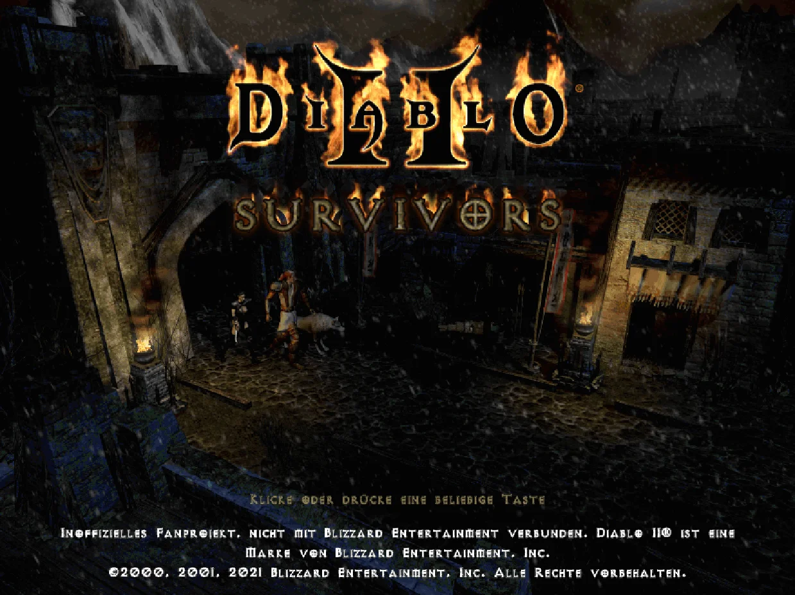
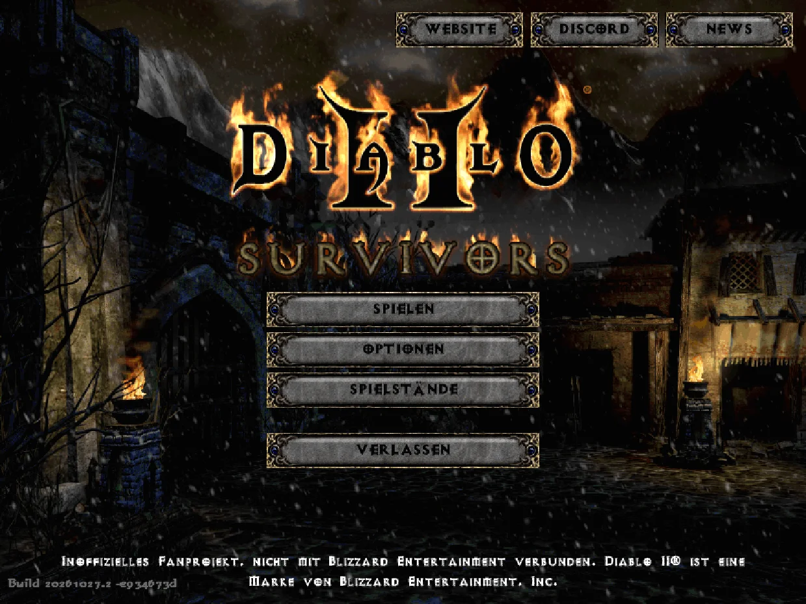
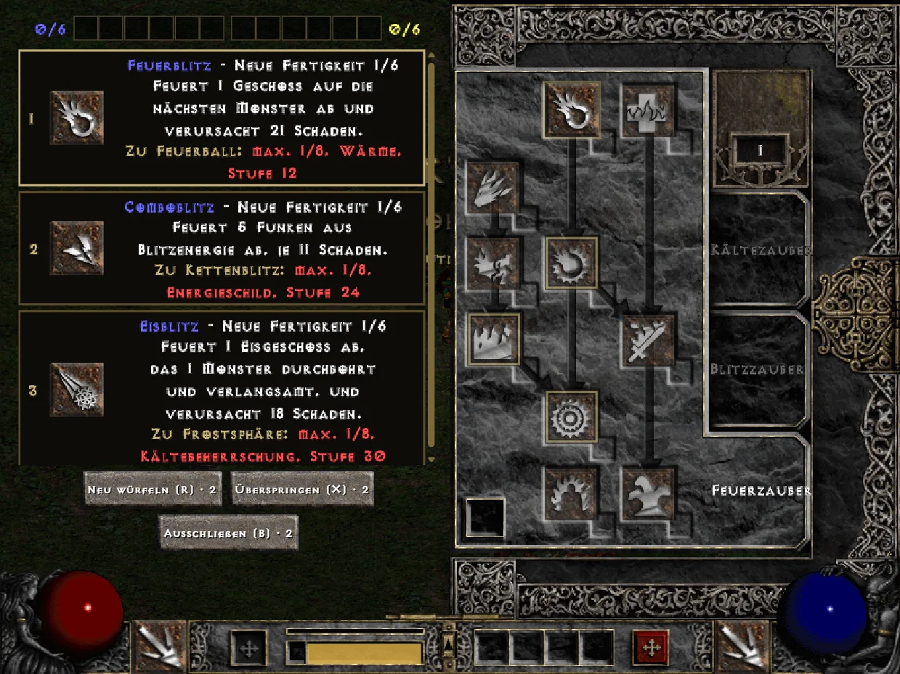
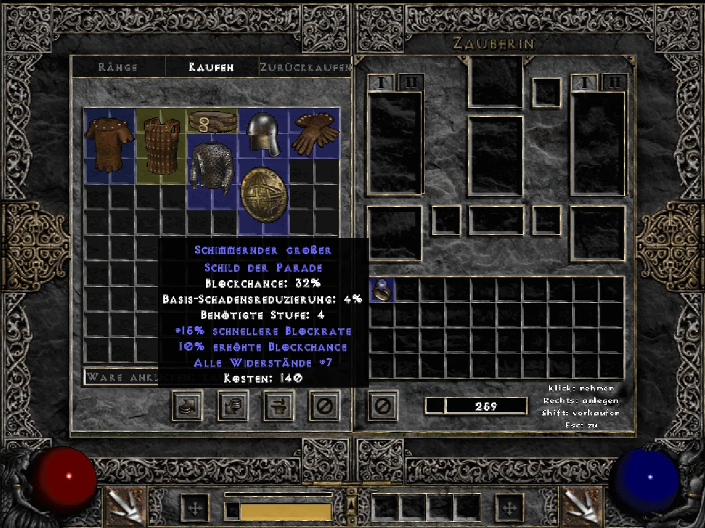
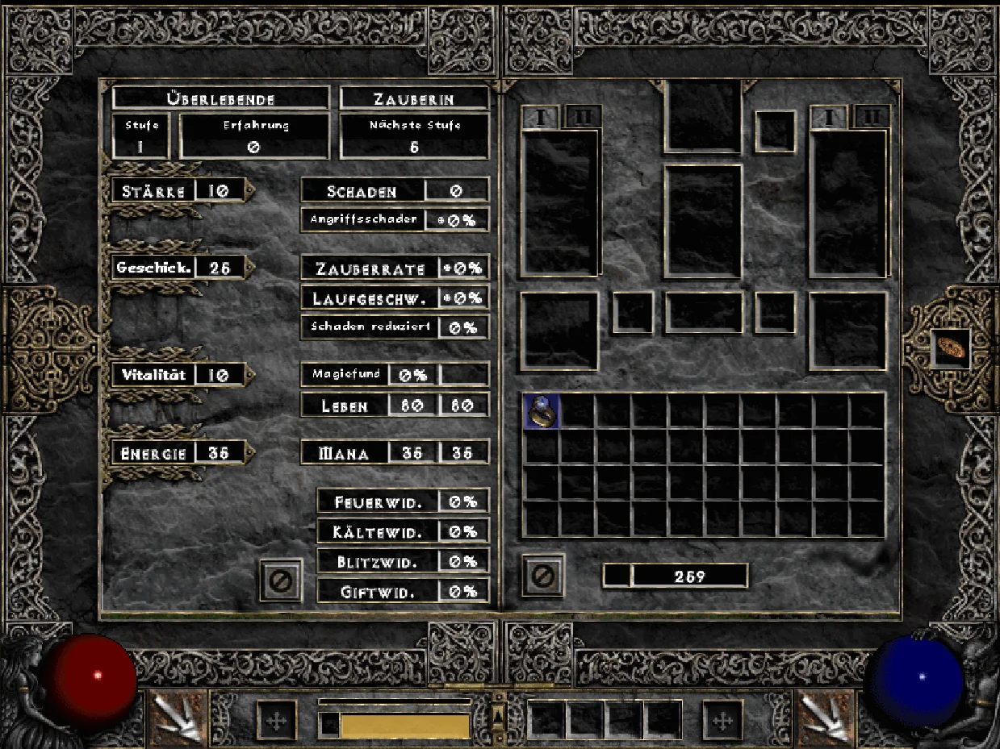
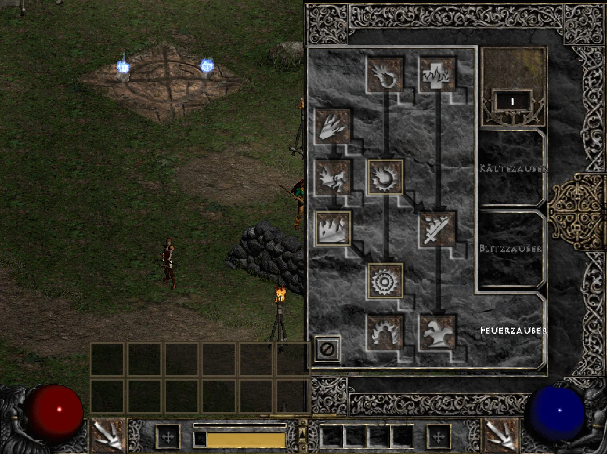
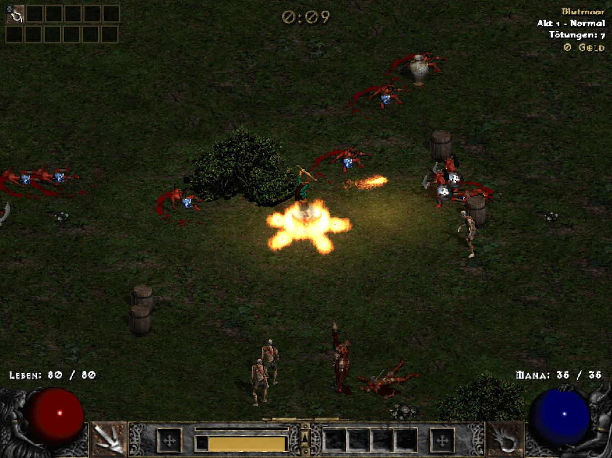
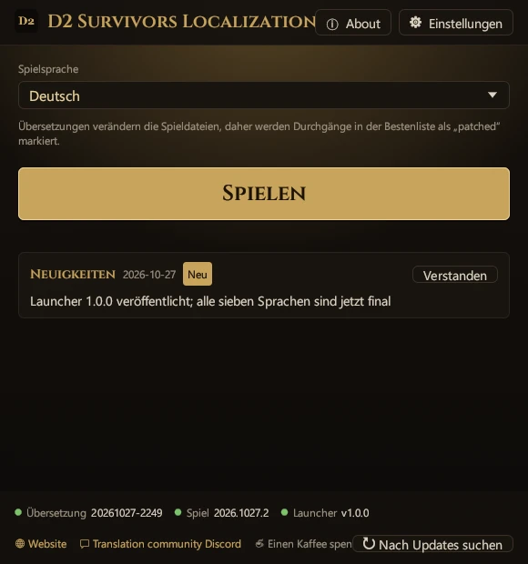

D2 Survivors
Von framara
Ein kostenloses, inoffizielles Fanspiel im Survivors-Stil in der Welt von Diablo II. Dieses Übersetzungsprojekt hat nichts mit dem Autor zu tun; Fehler im Spiel selbst bitte über die offiziellen Kanäle melden.
Inoffizielles Fanprojekt
Spiele Diablo 2 Survivors in deiner Sprache. Dieses Fanprojekt übersetzt das Spiel selbst, keinen Guide: Oberfläche, Fertigkeiten, Gegenstände, Monster und Level-up-Karten auf Deutsch, mit den offiziellen Begriffen aus Diablo II: Resurrected. Der Launcher installiert, aktualisiert und stellt alles mit einem Klick wieder her.
Die offizielle Browser-Version wurde entfernt; die Übersetzung gibt es nur noch für die Desktop-Version (Launcher für Windows).
Du hast die Browser-Version gespielt? Öffne „Browser-Spielstand übertragen“ (offizielle Seite, Englisch) im selben Browser, in dem du gespielt hast, lade deinen Spielstand als .txt-Datei herunter und wähle sie in der Desktop-Version im Hauptmenü unter SPIELSTÄNDE (SAVES) → Spielstanddatei öffnen (Open a save file) aus.








Spielszenen: D2 Survivors (framara), mit den eigenen Diablo-II-Dateien des Spielers
Dieses Projekt stellt nur Übersetzungen bereit und enthält keine Spieldateien. Hol dir vorher D2 Survivors und Diablo II aus den offiziellen Quellen unten.
Von framara
Ein kostenloses, inoffizielles Fanspiel im Survivors-Stil in der Welt von Diablo II. Dieses Übersetzungsprojekt hat nichts mit dem Autor zu tun; Fehler im Spiel selbst bitte über die offiziellen Kanäle melden.
Blizzard Entertainment
D2 Survivors liest Grafik und Sound aus dem Diablo II auf deinem Computer. Du brauchst also ein eigenes Diablo II: Resurrected oder Diablo II + Lord of Destruction (Patch 1.14).
Begriffe: Namen von Fertigkeiten, Gegenständen, Monstern und Gebieten folgen der offiziellen Übersetzung von Diablo II: Resurrected; alles andere übersetzt dieses Projekt.
Chinesisch (traditionell), Chinesisch (vereinfacht), Japanisch, Deutsch, Französisch, Russisch und Polnisch sind fertig und veröffentlicht.
Neuerungen bei Übersetzungen, Sprachen und Launcher. Der Launcher holt jedes Mal die neueste Übersetzung, ohne neuen Download.
Patchnotes des D2-Survivors-Entwicklers; wir übernehmen nur die Übersetzung.
Patchnotes des D2-Survivors-Entwicklers; wir übernehmen nur die Übersetzung.
Patchnotes des D2-Survivors-Entwicklers; wir übernehmen nur die Übersetzung.
Patchnotes des D2-Survivors-Entwicklers; wir übernehmen nur die Übersetzung.
Du änderst keine Spieldateien von Hand – das erledigt der Launcher. Schließe vorher das Spiel. Der Launcher zeigt alles in der Sprache an, die du auswählst.
Lade die Desktop-Version von der offiziellen D2-Survivors-Website, gib im Einrichtungsbildschirm deinen Diablo-II-Ordner an und prüfe, ob das Spiel startet.
Lade d2s-launcher.exe herunter und lege ihn in einen beliebigen Ordner. Keine Installation nötig.
Beim ersten Start siehst du alle Sprachen, jede in ihrer eigenen Schrift. Klicke auf deine Sprache und dann auf „→“ – Launcher und Spielübersetzung nutzen ab dann diese Sprache.
① „Spiel“: Der Launcher sucht D2 Survivors (standardmäßig in %LOCALAPPDATA%\Programs\D2 Survivors; liegt es woanders, nimm „Ordner wählen…“). ② „Diablo II“: Er sucht dein Diablo II: Resurrected oder klassisches Diablo II; wird nichts gefunden, kannst du „Überspringen“. ③ „Fertig“: Auf Wunsch „Desktopverknüpfung erstellen“, dann „Spielen“. Beim ersten Mal wird die Übersetzung geladen und die originale app.asar gesichert.
Standardmäßig holt jeder Start die neueste Übersetzung („Übersetzungen beim Start aktualisieren“ unter „Einstellungen“), und nach Spiel-Updates wird sie automatisch neu angewendet. Die Sprache wechselst du im Hauptfenster unter „Spielsprache“.
app.asar wieder da.%LOCALAPPDATA%\D2SurvivorsLauncher löschen.Für eine eigene Verknüpfung nimm diese Zeile als Ziel: Das Spiel startet direkt in der gewählten Sprache, ohne Launcher-Fenster. (Die Verknüpfung aus „Desktopverknüpfung erstellen“ öffnet das Fenster und startet das Spiel sofort.)
d2s-launcher.exe --launch --lang de--launch--play--lang <id>--no-update--update--restore--self-update--statusNein. Es ist eine inoffizielle Fanübersetzung ohne Verbindung zu den Entwicklern von D2 Survivors oder zu Blizzard Entertainment.
Der Code schon. Der Quellcode von Launcher, Website und Werkzeugen liegt auf GitHub unter der MIT-Lizenz. Der Launcher wird von GitHub Actions automatisch aus diesem öffentlichen Quellcode gebaut (Build-Verlauf), und jedes Release enthält d2s-launcher.exe.sha256, damit du ihn selbst prüfen kannst.
Die Übersetzungsdaten (die Wörterbücher) stehen noch unter keiner offenen Lizenz; alle Rechte vorbehalten, siehe dict/LICENSE. Die darin verwendeten offiziellen Begriffe gehören Blizzard Entertainment.
Sie ist fertig: vollständig übersetzt und im Spiel auf Lücken geprüft. Danach wurden alle Oberflächentexte und 300 zufällig gewählte Einträge noch einmal unabhängig gegengelesen; daraus entstanden rund 400 Korrekturen im ganzen Wörterbuch. Namen magischer Gegenstände und besonderer Monster werden nach deutscher Grammatik zusammengesetzt, etwa „Robuste Kappe des Geistes“, und Heldinnen tragen weibliche Titel. Rund 70 % der Begriffe stammen direkt aus der offiziellen deutschen Übersetzung von Diablo II: Resurrected.
Wenn dir Fehler auffallen, sag uns bitte Bescheid.
Derzeit nicht. Den Launcher gibt es nur für Windows, und da die offizielle Browser-Version entfernt wurde, gibt es auch unser Lesezeichen nicht mehr. Auf Mac, Linux und dem Handy lässt sich die Übersetzung im Moment nicht nutzen.
Nein. Der Launcher ersetzt nur resources\app.asar im Spielordner und sichert vorher das Original. Spielstände liegen woanders und werden weder gelesen noch geändert.
Ja. Der Entwickler hat eine offizielle Seite zum Übertragen von Spielständen behalten (nur Englisch und Koreanisch). Sie findet den Spielstand der Browser-Version in deinem Browser und bietet ihn als .txt-Datei zum Download an.
Öffne die Seite unbedingt im selben Browser, in dem du die Browser-Version gespielt hast (und im selben Browserprofil), sonst wird der Spielstand nicht gefunden. In einem anderen Browser oder einem privaten Fenster klappt es nicht.
Öffne danach die Desktop-Version, wähle im Hauptmenü SPIELSTÄNDE (SAVES) → Spielstanddatei öffnen (Open a save file) und die heruntergeladene .txt-Datei. Hardcore-Spielstände lassen sich wie im Spiel selbst nicht übertragen.
Ein Update ersetzt app.asar, die Übersetzung ist dann weg, bis du das Spiel wieder über den Launcher oder die Verknüpfung startest – der wendet sie erneut an.
Hat sich die neue Version zu stark geändert, erzwingt der Launcher nichts: Er startet das Originalspiel und meldet, dass die Übersetzung angepasst wird. Ist sie fertig, wird sie beim nächsten Start automatisch wieder angewendet – du musst nichts tun.
Die Übersetzung nutzt den eingebauten Koreanisch-Platz des Spiels. Danach zeigt das Menü dort den Namen der gewählten Sprache. Für Koreanisch wähle im Launcher „한국어 (원본)“.
Alle Texte im Spiel sind übersetzt und im Spiel auf Lücken geprüft. Siehst du Englisch, hat meist ein Spiel-Update neue Texte gebracht; die Übersetzung reicht sie mit einem der nächsten Updates nach, und der Launcher lädt sie automatisch. Bleibt etwas auf Englisch, sag uns bitte Bescheid.
Das Spiel markiert Einträge als patched, wenn du eine übersetzte Sprache wählst; für normale Einträge wähle im Launcher unter „Spielsprache“ English.
Der Launcher ist nicht signiert (ein Zertifikat kostet jedes Jahr Geld), daher warnt Windows SmartScreen, bis ihn genug Leute heruntergeladen haben.
Signiert ist er nicht, aber Quellcode und Build-Prozess des Launchers sind öffentlich.
Klicke auf „Weitere Informationen“ und dann auf „Trotzdem ausführen“; danach fragt Windows nicht mehr. Lade ihn nur von dieser Website oder von GitHub Releases. Jedes Release enthält d2s-launcher.exe.sha256, prüfbar mit certutil -hashfile d2s-launcher.exe SHA256.
Meldet der Browser, dass die Datei selten heruntergeladen wird, wähle im Menü des Downloads „Beibehalten“.
Leider nein. Das Spiel selbst erlaubt in Charakternamen nur englische Buchstaben (ohne ä, ö, ü, ß) und Koreanisch.
Tippfehler, fehlende Übersetzungen und Probleme mit dem Launcher bitte im Discord der Übersetzungs-Community melden; dort gibt es auch Neuigkeiten.
Übersetzungs- und Programmfehler kannst du auch über GitHub Issues melden.
Probleme mit dem Spiel selbst (nicht durch die Übersetzung) bitte im offiziellen Discord von D2 Survivors (Englisch) melden.
Sehr gern! Alle Sprachen sind fertig veröffentlicht, aber eine Übersetzung kann immer besser werden. Wenn dir holprige Formulierungen oder Tippfehler auffallen, gerade in deiner Muttersprache, sag uns Bescheid. Schreib uns hier.